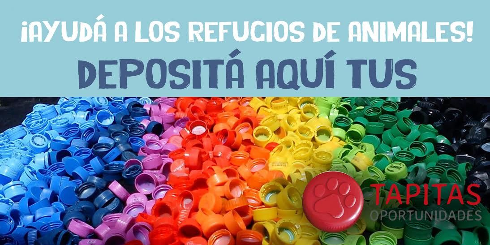

Tapitas oportunidades: medio ambiente y cuidado animal
La idea nace como una organización sin fines de lucro que busca, mediante el reciclaje de tapitas plásticas ayudar a los refugios de animales de Uruguay. Hay varios centros que recepcionan las tapitas recolectadas, las cuales luego se clasifican y se venden a recicladoras. Con el dinero recaudado se hacen donaciones a los distintos refugios que participan del programa, sustendandolos con lo que necesiten. Las donaciones incluyen alimentos, medicinas, castraciones, etc. Todo dependiendo de la necesidad del establecimiento.
Los centros de recepción se encuentran en gran parte del territorio nacional:
Además, organizan otro tipo de actividades, como por ejemplo venta de productos, castraciones apadrinadas, etc.
